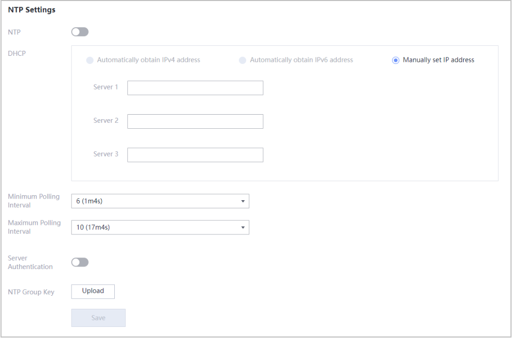

Context
The iBMC time configuration affects only the time system of itself.
Procedure
- Choose iBMC Settings > Time Zone & NTP.Figure 1 Time zone & NTP
Table 1 Time zone & NTP Parameter
Description
Time Zone
Time zone of the iBMC.
The time zone information consists of Region and Time Zone.
The default values are Others and UTC.
NOTE:- If you select Automatically obtain IPv4 address, you do not need to set the time zone.
- In the time zones that use daylight saving time (DST), the iBMC time automatically adjusts the time one hour forward when the DST starts, and adjusts the time one hour backward when the DST ends.
- When performing time synchronization in the OS, run the hwclock --utc -w command to ensure that the OS time is consistent with the time on the iBMC.
NTP
Indicates whether to enable or disable the NTP function of the iBMC. If the NTP function is enabled, the iBMC time can be synchronized with the NTP server.
Automatically obtain IPv4 address
The iBMC automatically obtains NTP IPv4 information.
NOTICE:If the mode for obtaining the IP address of the iBMC management network port is automatic, the NTP information obtaining mode must also be automatic.
Automatically obtain IPv6 address
The iBMC automatically obtains NTP IPv6 information.
NOTICE:If the mode for obtaining the IP address of the iBMC management network port is automatic, the NTP information obtaining mode must also be automatic.
Manually set IP address
This allows you to manually configure the preferred and alternate NTP server IP addresses.
NOTICE:If the mode for obtaining the IP address of the iBMC management network port is manual, the NTP information obtaining mode must also be manual.
Servers 1 to 3
Preferred NTP server IP addresses.
The value is an IPv4 address, an IPv6 address, or a domain name.
NOTE:A domain name:
- Contains a maximum of 67 characters.
- Contains digits, letters, hyphens (-), and periods (.).
- Cannot start with a hyphen (-) or a period (.) or end with a hyphen (-).
- Allows a maximum of 63 characters between any two periods.
Two options are provided. See the actual window.
- Option 1: Three NTP servers are provided. In practice, the three server IP addresses take effect at the same time.
- Option 2: Three groups of NTP servers are provided. In each group, the server on the left is the preferred one, and that on the right is the alternative one. In practice, the system selects server addresses based on the following priority rules:
- The system selects a server address from each group.
- If both server addresses in a group are invalid, the system does not select any server address from this group.
- If only one server address is valid in a group, the system selects the valid server address.
- If both server addresses in a group are valid, the system preferentially selects the IPv6 address. If both addresses are either IPv4 or IPv6, the system preferentially selects the preferred server address.
NOTE:The switchover between the active and standby NTP servers is related to the synchronization interval between the iBMC and the NTP servers (Minimum polling interval ≤ Synchronization interval ≤ Maximum polling interval). If no response is returned when the iBMC synchronizes time with the active NTP server for multiple times, the active NTP server is switched to the standby one.
Minimum Polling Interval
Minimum interval at which the iBMC synchronizes time with the NTP server, that is, the minimum polling interval of NTP packets.
For example, if the value of minimum polling interval is set to 6, the minimum polling interval is 2 to the power of 6, that is, 64 seconds.
Value range: 3 to 17
NOTE:In iBMC V585 and later, this parameter can be customized.
Maximum Polling Interval
Maximum interval at which the iBMC synchronizes time with the NTP server, that is, the maximum polling interval of NTP packets.
For example, if the value of maximum polling interval is set to 6, the maximum polling interval is 2 to the power of 6, that is, 64 seconds.
Value range: 3 to 17
NOTE:In iBMC V585 and later, this parameter can be customized.
Server Authentication
Indicates whether identity authentication is required when the iBMC communicates with the NTP server.
Default value: disabled
NTP Group Key
When Server Authentication is enabled, you need to upload the key to the iBMC for identity authentication during communication with the NTP server.
NOTE:- You can download a key generator (for example, ntp-keygen) to generate the required key.
- Only key files generated by the MD5 and SHA256 algorithms can be uploaded.
- For security purposes, periodically update the key.
- In the Region and Time Zone drop-down lists, select the parameters to be set.
- Click Save.
If a message is displayed, indicating that the operation is successful, the setting is successful.

When performing time synchronization in the OS, run the hwclock --utc -w command to ensure that the OS time is consistent with the time on the iBMC.
- In the NTP Settings area, set NTP information based on the parameter information in Table 1.
- Click Save.
If a message is displayed, indicating that the operation is successful, the setting is successful.